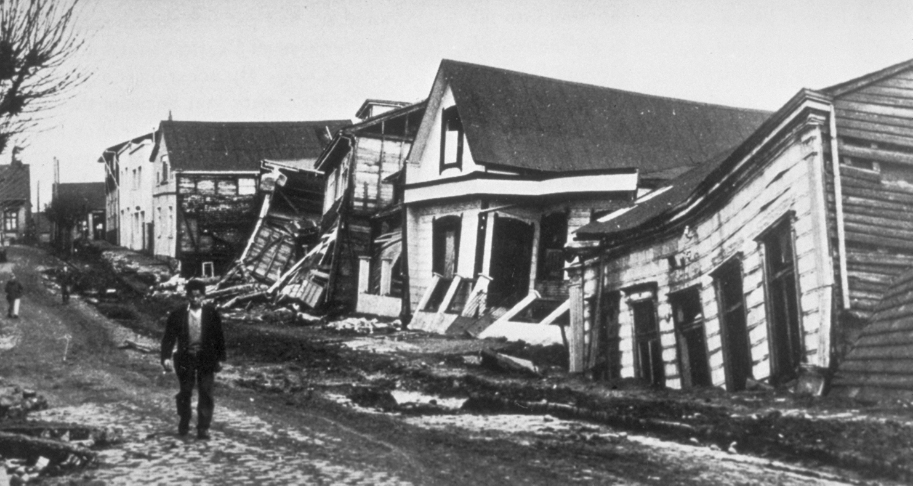

The strongest earthquake ever recorded was a magnitude 9.5 event that struck off the coast of Chile on May 22, 1960, commonly known as the Great Chilean or Valdivia earthquake. It was a megathrust earthquake caused by the subduction of the Nazca plate under the South American plate. The event triggered a massive Pacific-wide tsunami that caused significant damage and loss of life in places as far away as Hawaii and Japan
